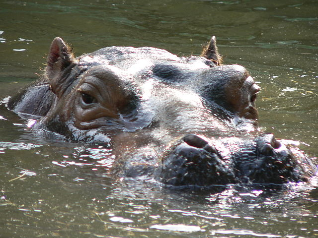

Hroch obojživelný
Hroch obojživelný (Hippopotamus amphibius) je velký sudokopytník z čeledi hrochovitých, adaptovaný k životu ve vodním prostředí. Vyskytuje se v Africe na jih od Sahary. Jeho nejbližším příbuzným je hrošík liberijský. Dříve byli hroši pokládání za příbuzné prasat, podle nedávných výzkumů však mají mnohem bližší příbuzenské vztahy k předkům kytovců.
Pojmenování
Ve většině světových jazyků (např. angličtina, řečtina, polština, bulharština, románské jazyky) se pro hrocha používá název odvozený od starořeckého jména hippopotamos (doslova "říční kůň") nebo doslovný překlad slovního spojení "říční kůň" (němčina, skandinávské jazyky, arabština) či nilský kůň (srbština, chorvatština, maďarština, turečtina, němčina). Pouze hebrejština, ruština a ukrajinština používají názvy, odvozené od jména biblického netvora Behemota.
Český název hroch má ekvivalent pouze ve slovenštině, kam byl ale přejat z češtiny. Etymologie tohoto slova není zcela jasná, zřejmě souvisí se staročeským slovem hrochot ve významu rachot, rámus, řev. Slovo hroch je v češtině doloženo již ve 14. stol. jako vlastní jméno, které se zvířetem - hrochem nesouvisí. Dodnes se dochovalo v příjmeních (např. historik Miroslav Hroch) nebo v místních názvech (Hrochův Týnec), ve staré češtině se pro hrocha-zvíře používalo slovo behemot (doloženo např. v cestopise Kryštofa Haranta z Polžic).
Domorodá jména hrocha v afrických jazycích jsou velmi rozmanitá. V severovýchodní Africe je znám pod arabským jménem faras an-nahr (doslova "říční kůň"), v Etiopii se nazývá gumarre, v Somálsku džir, v západní Africe ho Bambarové nazývají mali, ve východní Africe se používá svahilský název kiboko, v nilotských jazycích se nazývá makawu či masajsky ol-makau, v bantuských jazycích jižní a střední Afriky se nazývá nejčastěji kubu, mwubu, či mvuvu.
Vzhled
Hroch je nejtěžším recentním druhem sudokopytníka a třetím nejtěžším suchozemským živočichem. Dospělý samec měří až 360 cm, dosahuje výšky v kohoutku 165 cm a hmotnosti přes tři tuny, samice jsou zpravidla menší (až o třetinu). Hroší samci mají obvykle větší hlavu, delší ocas a vyšší končetiny než samice.
Tělo hrocha má válcovitý tvar, je dlouhé, zakulacené, s objemným břichem. Končetiny jsou silné a nízké, mezi čtyřmi prsty, ukončenými tupými kopýtky, jsou plovací blány. Při chůzi došlapuje hroch na všechny čtyři prsty, přestože druhý a třetí prst jsou silnější než dva postranní. Kostra hrocha je velmi těžká, bez vzduchových dutin, což zvyšuje měrnou hmotnost hrošího těla. To hrochům usnadňuje potápění a umožňuje jim i chůzi po dně, kde si hledají část potravy. Ocas je krátký a opatřený tuhým střapcem chlupů.
Hroší hlava má širokou, zakulacenou obličejovou část, naproti tomu mozkovna je krátká a plochá. Oči, ušní boltce i nozdry jsou umístěny velmi vysoko na hlavě, což je adaptace pro život ve vodě. Nozdry a uši jsou rovněž opatřeny záklopkami a hroch je při ponoření zavírá. Velmi vyvinuté jsou zuby. Řezáky ve spodní čelisti jsou kolíkovité a míří šikmo dopředu, špičáky jsou přeměněny v kly, zejména u samců dosahují úctyhodných rozměrů. Z dásní vynikají na délku asi 35 cm a celkově mohou měřit až 70 cm. Slouží především jako zbraň ve vzájemných soubojích. Špičáky i řezáky v horní čelisti jsou mnohem menší a mají kolíkovitý tvar. Zatímco špičáky a řezáky hrochům rostou po celý život, stoličky se postupně vyměňují, obdobně jako u slonů. Při trhání potravy slouží hrochům tuhé, kožovité pysky, zuby používají jen při dobývání kořenů vodních rostlin.
Hroší kůže je lysá a velmi tlustá (na některých místech až 3 cm), chlupy rostou pouze na konci ocasu, uvnitř ušních boltců a na čenichu. Pod kůží se nachází asi pěticentimetrová vrstva tuku. Zbarvení hrocha kolísá od břidlicově šedé, šedohnědé až po téměř černou barvu, na břiše a končetinách je kůže vždy světlejší, až do růžova. Hroší kůže je navzdory své tloušťce velmi citlivá a v suchu snadno popraská. Rčení o hroší kůži jako symbolu necitelnosti tedy neplatí. Kůže je prostoupena potními žlázami a rovněž žlázami mazovými, které vylučují olejnatý sekret, mající růžovou barvu. Tento sekret hrocha na souši chrání před slunečním zářením, zatímco ve vodě snižuje odpor jeho těla, což mu pomáhá při plavání. Tyto výměšky mají růžovou barvu, což zavdalo příčinu pověrám, že hroši potí krev.
Způsob života
Hroši jsou společenská zvířata, žijí v různě velkých tlupách, které mohou mít až 150 zvířat, obvykle však čítají jen 10-20 jedinců. Menší tlupy tvoří většinou jeden samec s několika samicemi a mláďaty, ve větších bývá samců několik. I v takovém případě ale mezi hrochy vládne přísná hierarchie. Nejsilnější samec obhajuje teritoria tlupy o rozsahu asi 500 m čtverečních a páří se s většinou samic. Teritorium si hroší samci označují trusem, který na souši i ve vodě rozmetávají pomocí ocasu. Na řekách bývají teritoria obvykle menší než na stojatých vodách.
V místech s hustší populací hrochů spolu samci často vzájemně bojují o samice či o teritorium. Časté je hlavně "zívání" hroších samců, což je projev imponování, pouze v zajetí takto hroši žebrají o potravu. Pokud se ani jeden ze samců nedá imponováním zastrašit, následuje souboj. Samci se při souboji koušou tesáky, boje mohou být velmi kruté, o čemž svědčí časté šrámy na kůži samců. Pokud je v souboji vůdčí samec poražen, vítěz ovládne tlupu a v některých případech usmrtí všechna sající mláďata, která zplodil jeho předchůdce (podobně jako u lvů). Výrazem podřízenosti je u hrochů tzv. submisivní kálení, při němž hroch vystrčí zadní část těla z vody a vykálí se před dominantním jedincem, často doslova na jeho čenich. Vůdčí samci tento projev často přímo vyžadují od podřízených samců v tlupě. Hroši jsou velmi hlučná zvířata, ozývají se ve vodě i na souši, a to dutým řvaním, bučením, funěním, chrochtáním a dalšími zvuky, mládě v nouzi přivolává matku kvičením.
Hroši výborně plavou, především pomocí zadních končetin. Díky své vysoké měrné hmotnosti dokáží i chodit po dně. Ponor na jedno nadechnutí trvá většinou 3-5 minut, v nouzi, např. při poranění, však vydrží hroch pod vodou daleko déle, rekordně až 25 minut. Přes svou zdánlivou těžkopádnost dokáží hroši obratně šplhat, což se projevuje především při vylézání z vody na strmý břeh. Na některých místech lze pozorovat hluboké blátivé brázdy, jakési koridory, které si hroši vyšlapali do říčního břehu. Na souši je hroch schopen běžet rychlostí až 30 km/h, k běhu se však odhodlá jen v nouzi.
Den tráví hroši ve vodě, případně se sluní na břehu, poblíž vody. Odpoledne jejich aktivita narůstá a po setmění vycházejí na pastvu, často i poměrně daleko od vody, rekordně až 10 km. Přitom navštěvuje i pole nebo plantáže, kde může napáchat značné škody.
Mezi hrochem a některými dalšími živočichy existují mutualistické vztahy. Hrochy na souši i ve vodě často doprovází volavka rusohlavá, která je zbavuje parazitů nebo v jejich přítomnosti loví drobné živočichy. Volavky také mohou hrocha varovat před nebezpečím. Naproti tomu klubáci navštěvují hrocha vzácněji než jiné velké africké savce. Ve vodě hrochům odstraňuje parazity také želva pelomedusa (Pelomedusa subrufa) a kaprovitá ryba labeo dlouhoploutvé (Labeo longipinnis), která se masitými pysky přisává na horší kůži a čistí ji od pijavek i odumřelé pokožky. Labeo i některé další ryby se živí rovněž hroším trusem.
Potrava
Hroch si získává část potravy ve vodě, pomocí zubů vyrývá ze dna oddenky a kořeny, např. lotosu. Spásá i plovoucí rostliny, jako je např. pistie, většinu potravy ale získává noční pastvou na souši. Hroší žaludek je trojdílný, mimořádně objemný a žije v něm mnoho druhů symbiotických prvoků. Díky nim je hroch schopen strávit i velmi hrubou a vláknitou potravu, jakou jiní býložravci nežerou, např. ostřici nebo šáchor. Pokud má možnost si vybírat, upřednostňuje chutnější druhy trávy, jako je vousatka, troskut či divoké proso. Hroch sežere denně 30–40 kg rostlinné potravy, což je v poměru k jeho velkosti relativně málo (v poměru k hmotnosti těla je to poloviční spotřeba potravy než u domácího skotu).
Rozmnožování
Hroši se rozmnožují po celý rok. S většinou samic se páří vůdčí samec, který však často umožňuje páření s některými samicemi i ostatním samcům. Páření probíhá vždy ve vodě. Hrošice je březí 230-240 dní a rodí většinou jedno mládě, výjimečně dvojčata. Mládě se rodí ve vodě a ihned po narození vyplouvá k hladině, aby se poprvé nadechlo. Plavat umí mládě dříve než chodit a pod vodou bývá také kojeno. Mládě saje asi 8 měsíců a matka jej chrání až do dalšího porodu, což bývá zpravidla dva roky. Někdy samice vodí první mládě i po vrhu dalšího sourozence. Samice vodí mládě obvykle před sebou. Dokud jsou mláďata malá, matka je ve vodě vozí na hřbetě.Občas matce s péčí o mládě pomáhají i další samice, podobně jako u slonů. Mláďata hrochů jsou velmi zvědavá a hravá, dají se snadno ochočit. V přírodě mladým hrochům hrozí nebezpečí především od krokodýlů, ale také od dospělých hroších samců, před nimiž matka mládě zuřivě brání. Plné velikosti dosahují hroši až ve věku 5 let a do rozmnožování se samice zapojují nejdříve ve věku 7 let, samci však zpravidla až ve věku 12-15 let. Hroch se může dožít až 55 let, v přírodě to však bývá méně, jen asi 40 let.
Hroši a lidé
Pro svou velikost a nápadný vzhled poutali hroši odedávna pozornost člověka. Hrochy lovili už prehistoričtí obyvatelé Afriky. Známými lovci hrochů byli staří Egypťané, jež při lovu používali harpuny s plováky. Stejným způsobem lovili hrochy domorodci v severovýchodní Africe ještě počátkem 20. století. Jinde byli hroši stříleni otrávenými šípy, chytáni do jam nebo chytacích ohrad. od 19. stol. jsou většinou loveni odstřelem pomocí těžkých kulovnic.
Hroší maso je chutné a nepříliš tučné (tuk je uložen pod kůží), domorodci ho zpracovávají nejčastěji sušením. Využívá se také hroší kůže, z níž se vyráběly např. štíty či biče. Hroší zuby lze po odstranění tvrdé, žlutohnědé skloviny zpracovávat podobně jako slonovinu. Jsou sice menší, věkem však nežloutnou. Využívání hroších klů vzrostlo hlavně po roce 1989, kdy byl vyhlášen mezinárodní zákaz obchodu se slonovinou. V 19. stol. se z hroších zubů vyráběly klávesy klavírů nebo zubní protézy.
Staří Egypťané měli k hrochovi ambivalentní postoj. Na jedné straně uctívali bohyni plodnosti a ochránkyni žen Tveret s hroší hlavou, hroch však byl zároveň spojován s bohem Sutechem a silami zla. Amemait neboli Velká požíračka, příšera ze staroegyptského záhrobí, která polykala nesmrtelné duše provinilých lidí, měla hroší tělo, lví hřívu a krokodýlí tlamu. Hroch byl také oblíbenou lovnou zvěří Egypťanů. Dochovala se zobrazení egyptských faraonů při lovu hrocha, který je však na obraze nepoměrně malý (v poměru k faraonovi asi jako králík).
Ve Starém zákoně je zmiňován netvor Behemot, který bývá ztotožňován s hrochem. V knize Jób je Behemot popisován jako ohromný vodní býložravec s velkou tlamou. Jeho popis zhruba odpovídá hrochovi, na rozdíl od něj však má biblický netvor dlouhý ocas. Proto není jisté, zda se jedná o špatný popis hrocha, nějakého jiného tvora (slon, krokodýl), případně o zcela vymyšlené bájné zvíře. V některých jazycích, např. v ruštině, je název hrocha odvozen od slova Behemot. Hroch byl dobře znám i starým Řekům a Římanům. Psali o něm autoři jako Hérodotos, Aristoteles a Plinius Starší, které upoutal svou silou a velikostí. Mezinárodně používaný název hippopotamus je řeckého původu a znamená "říční kůň". Starověcí Římané hrocha zneužívali ke krutým hrám v cirku.
Idžové z jižní Nigérie pokládají hrocha za svého předka a zhotovují nádherné hroší masky. Jihoafričtí Zuluové pokládají hrocha za symbol statečnosti. Sanové si vyprávějí legendu, vysvětlující hroší zvyk rozmetávat trus ocasem. Stvořitel prý nechtěl hrochovi dovolit, aby žil ve vodě, protože se bál, že svou obrovskou tlamou spolyká všechny ryby. Teprve když hroch slíbil, že bude navždy jíst jen rostliny, dovolil mu stvořitel žít ve vodě. Od té doby hoch vždy rozmetá svůj trus ocasem, aby stvořitel viděl, že v něm nejsou rybí kostičky. Lov hrochů měl pro některá africká etnika velký význam, například lidé skupiny Weyto od etiopského jezera Tana, byli v minulosti zcela závislí na lovu hrochů a krokodýlů.
Podle některých vědců je hroch perspektivním zvířetem pro domestikaci, protože dosahuje rychlých váhových přírůstků při relativně malé spotřebě potravy. Dokáže přitom využívat značně nekvalitní a hrubou potravu, poskytuje výtečné maso i dostatek tuku. Chovu hrochů brání jejich síla, neovladatelnost a agresivita. V roce 2007 bylo několik hrochů vysazeno v Kolumbii v povodí řeky Magdaleny, z důvodů produkce masa i boje proti invazi vodního hyacintu. Hodnoceno podle počtu zabití a zranění lidí jsou hroši nejnebezpečnější savci Afriky, usmrtí ročně mnohem více lidí než lvi, levharti, sloni či krokodýli.